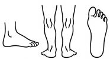

Aktywność fizyczna
3.2. Profilaktyka wad postawy u dzieci i młodzieży
Prawidłowa postawa ciała oraz regularna aktywność fizyczna odgrywają kluczową rolę w zdrowiu i rozwoju dzieci oraz młodzieży. Peper et al. wykazali, że zachowanie wyprostowanej sylwetki sprzyja lepszym wynikom w nauce, m.in. w testach matematycznych.5 Z kolei badania nad równowagą i ustawieniem kręgosłupa pokazały, że poprawna biomechanika w staniu i siedzeniu koreluje ze stabilnością posturalną oraz mniejszym ryzykiem bólów kręgosłupa już u nastolatków.6 Ćwiczenia oparte na metodykach takich jak pilates dowiodły swojej skuteczności we wzmacnianiu mięśni tułowia i korekcji wad postawy u dzieci w wieku szkolnym, a programy edukacji posturalnej realizowane w szkołach przynoszą znaczące zmniejszenie częstości występowania nieprawidłowości i dolegliwości bólowych.7 Ponadto wysoki poziom aktywności fizycznej wiąże się z lepszą funkcją mięśniową, efektywniejszym wydatkowaniem energii oraz obniżonym ryzykiem dolegliwości układu mięśniowo-szkieletowego, w tym bólów pleców.8 Wraz z gwałtownym wzrostem czasu spędzanego przez dzieci i młodzież przed ekranami komputerów, tabletów i smartfonów (cyfryzacja) coraz częściej obserwuje się specyficzne zaburzenia postawy oraz dolegliwości układu mięśniowo-szkieletowego. Do najczęstszych konsekwencji należą: zwiększenie statycznych, nieergonomicznych pozycji, negatywna korelacja między czasem spędzanym przed ekranem a oceną postawy, skolioza i zabu-
rzenia równowagi.
3.2.1. Wpływ statycznych, nieergonomicznych pozycji
Długotrwałe siedzenie ze zgiętym do przodu tułowiem i wysuniętą głową (ang. text neck) prowadzi do nadmiernego przeciążenia szyjnego odcinka kręgosłupa i pogłębienia kifozy piersiowej. Przyjmowanie takiej pozycji powyżej 3 godz. dziennie wiąże się ze znacznym zwiększeniem częstości bólu szyi i barków u dzieci.9
418

Rycina V.3.5.
Szkic stopy płasko--koślawej ukazujący charakterystyczne cechy deformacji stopy wraz z jej poszerzonym odbiciem wynikającym z zaburzenia architektury związanego z obniżeniem łuku podłużnego i poprzecznego